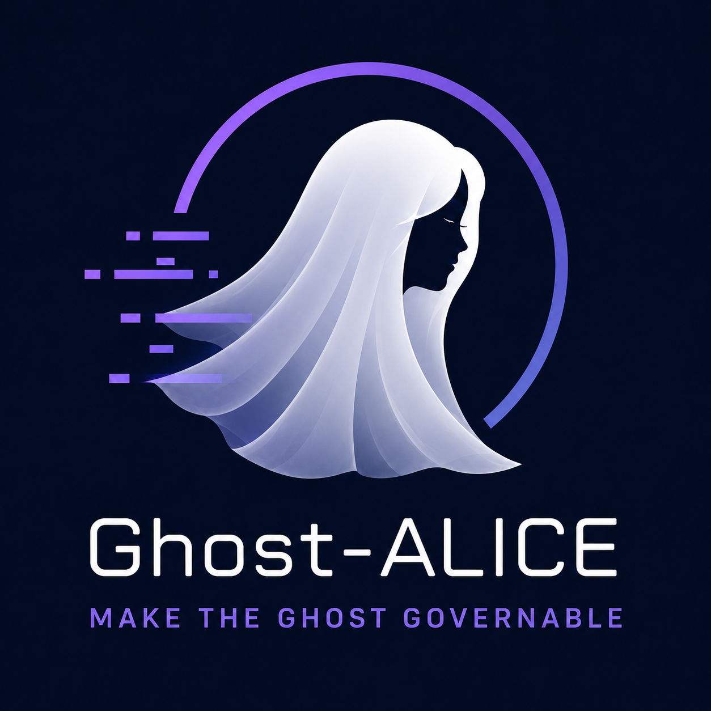

Ghost-ALICE OS

Keep AI agent work inspectable by recording intent, declaring boundaries, requiring evidence, and preserving installer state across supported runtimes.
git clone https://github.com/AidALL/ghost-alice.git ~/ghost-alice
cd ~/ghost-alice
bash install.sh
bash install.sh --addon autopilotAddons
Use official aliases when they fit. Bring your own addon repository for custom, tenant, or local development work with the same installer entrypoint.
| Source | Purpose | Install | Details |
|---|---|---|---|
| official: autopilot | Continue explicitly approved autonomous runs one work item at a time. | bash install.sh --addon autopilot |
AidALL/ghost-alice-autopilot |
| custom source | Install an addon you maintain, fork, tenant-package, or develop locally. | bash install.sh --addon-source /path/to/addon-repo |
Authoring guide |
Where to go next
The homepage is a navigation hub. Command truth lives in repo docs and installer help; background explanation lives in the Wiki.
Install
Core install, official addons, custom addon sources, status, doctor, update, and platform selection.
Open install guideUninstall
Full uninstall, platform uninstall, selected skill removal, and addon-specific removal boundaries.
Open uninstall guideCompatibility
Installer command surface expectations across Bash, PowerShell, CMD, Codex, and Claude Code.
Open matrixAddon sources
Official aliases, custom repositories, tenant packages, and local development addons.
Open wiki indexAddon authoring
Manifest format and packaging guidance for addons you build or bring in.
Open authoring guideHow it works
Core philosophy. Quality floor first. Operating loop steps and Verification layers stay visible without making the homepage a policy manual.
Gate interaction map
This is the inventory layer: core governance checkpoints first, then workflow and domain packs that run on top. Quality floor as root rule means agent authority follows verified state, not forward momentum.
Lifecycle support
The public entrypoint stays short; deeper onboarding, FAQ, and background discussion move to docs and wiki pages.
io-trace audit trail
File and external access can be inspected after a turn.
skill-evolution candidates
Behavioral improvement candidates remain report-only until explicitly accepted.
pending-merge review
Installed local edits are surfaced before being overwritten.
adversarial verification
Source-heavy or high-stakes claims can be checked through independent review.
jailbreak drift check
Current requests are compared against accumulated constraints.
runtime recovery
Installer state, support files, and cleanup reports preserve recovery context.